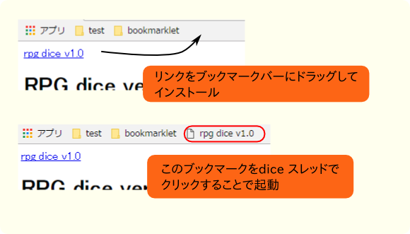
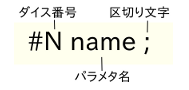
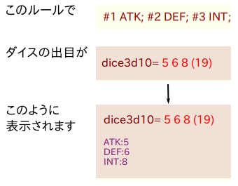
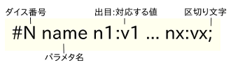
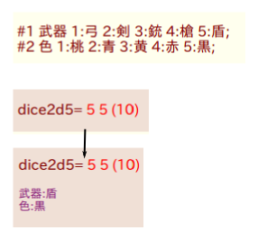
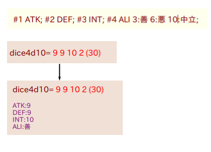

rpg dice v1.1
RPG dice ver1.1
RPG dice とは
RPG dice はふたば★ちゃんねるのdice機能支援のためのbookmarkletです。
スレッドを開始する際にルールを書いておくことで、ダイスの出目を見やすく整形します。
rpg dice 動作確認用ページ
導入方法
ページ上部のrpg dice のリンクをブラウザのブックマークバーにドラッグ＆ドロップする事でブラウザにインストールします。
dice 機能を使ったふたばのスレッドでインストールしたbookmarkをクリックすることで使用します。

スレッド内に下記のルールがある場合、そのルールにしたがって出目を整形し表示します。
こちらで導入したブックマークレットのテストができます。
"generate thread" のボタンを押した後にブックマークレットを起動してみてください。
ルールの設定 (基本)
rpg dice はスレッド内で最初に見つかったルールを適用します。
ルールがスレッド本文にある必要はありませんが、通常は本文中で定義することになるかと思います。
ルールは次のフォーマットでダイス毎に設定します。

例
#1 ATK; #2 DEF; #3 INT;

区切り文字はセミコロン、またはカンマが使えます。
セミコロンの場合はパラメータが改行されて表示されますが、カンマの場合はされません。
ルールの設定 (値の割り当て)
以下のようにそれぞれの出目に特定の値を割り当てる事もできます。

例
#1 武器 1:弓 2:剣 3:銃 4:槍 5:盾;
#2 色 1:桃 2:青 3:黄 4:赤 5:黒;

ルールの設定 (応用)
ある出目に対してルールに設定された値がない場合、
出目自身よりも大きな設定値の中で最小の物が採用されます。
#1 3:x 10:y; はdice1 が1-3 の時はx, 4-10 の時はy を使うことを意味します。
例
#1 ATK; #2 DEF; #3 INT; #4 ALI 3:善 6:悪 10:中立;

注意
ルールの中の空白は全て半角スペースです。
また値の割り当ての dice_value:out_value のコロン前後にスペースを入れてはいけません。
ダイス一つ分のルール(シャープから区切り文字(; or ,)まで)は1行で書く必要があります。
その他
rpg-dice のソースはここにあります。
お友達にも教えてあげて下さいね。